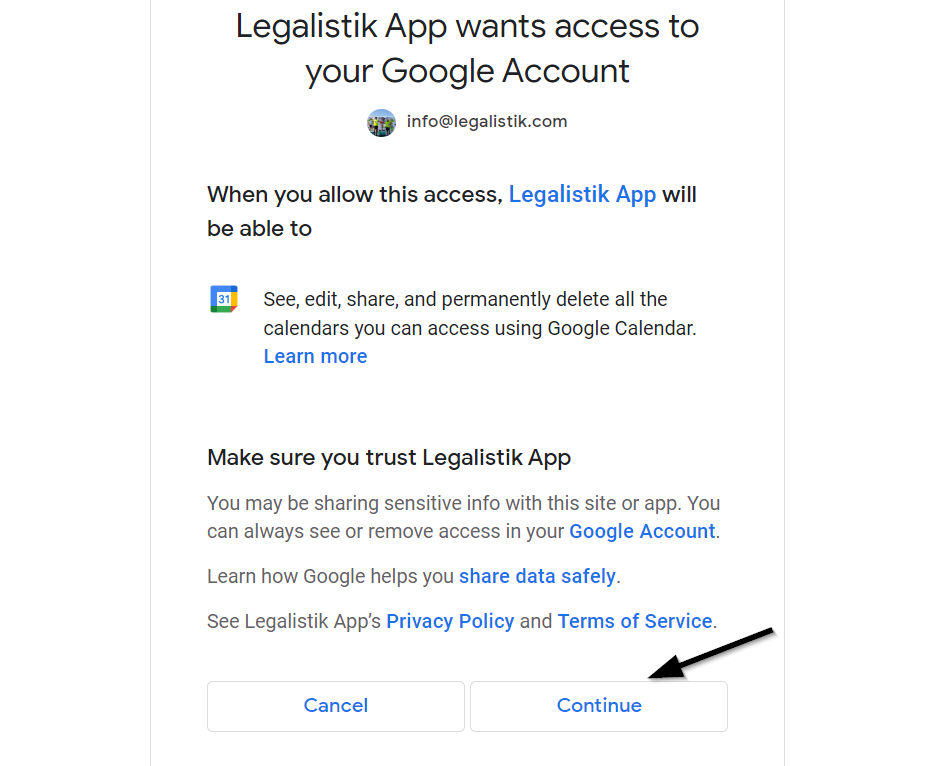
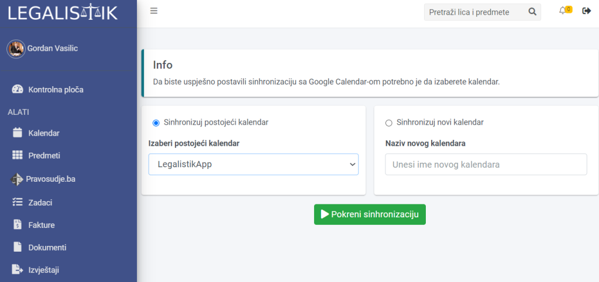
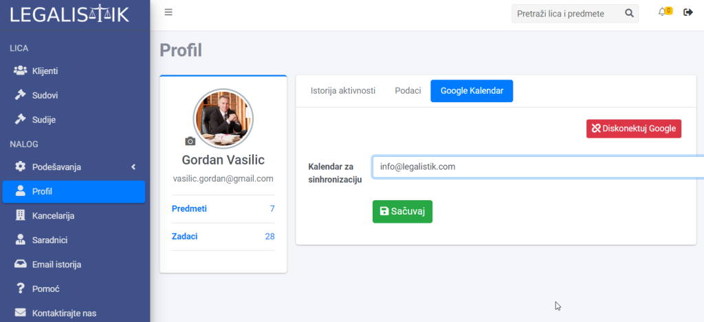
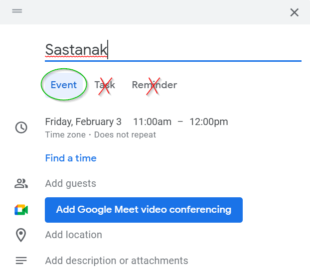

Svaki korisnik Legalistik aplikacije (advokati i saradnici) može povezati svoj Legalistik kalendar sa svojim Google kalendarom, i sinhronizovati obaveze i zadatke na oba kalendara. Sinhronizacija je dvosmjerna, što znači da će promjene u jednom kalendaru biti prenesena na drugi i obratno (recimo,dodavanje nove obaveze, njena izmjena ili brisanje).
Povezivanje sa Google kalendarom #
Da bi se povezali sa Google kalendarom, uđite u podešavanja Profila-a, kartica Google kalendar i kliknite na Sign in with Google dugme:

Izaberite Google nalog sa kojim želite da se povećete (ako ih imate više) i kliknite na Continue dugme da bi prihvatili povezivanje:

Da bi završili povezivanje, potrebno je na sledećem ekranu da izaberete sa kojim Google kalendarom će biti izvršeno povezivanje i sinhronizovanje. To može biti već napravljen kalendar na Google-u (u primjeru ispod to je LegalistikApp kalendar, napravljen na Google kalendaru prije povezivanja) ili možete napraviti novi kalendar biranjem Sinhronizuj novi kalendar i unosom imena novog kalendara, koji će Legalistik aplikacija napraviti na Google-u:

Nakon što izaberete kalendar, kliknite na Pokreni sinhronizaciju dugme da bi završili podašavanja i započeli prvu sinhronizaciju kalendara.
Napomena: Prva sinhronizacija može potrajati do 1-2h.
Promjena i brisanje Google kalendara #
Ako želite promjeniti Google kalendar sa kojim se sinhronizuje Legalistik kalendar, otvorite ponovo podešavanja Profila -> Google kalendar i izaberite drugi kalendar sa istog Google naloga u padajućoj listi. Snimite promjee sa Sačuvaj.
Ako želite da se povežete sa kalendarom iz drugog Google naloga, morate prvo prekinuti vezu sa trenutnim pomoću Diskonektuj Google opcije, a onda izvršite povezivanje sa novim, kao što je objašnjeno iznad:

Google dozvoljava sinhronizaciju samo Event-a (Dešavanje), ne Task (Zadatak) niti Reminder (Podsjetnik), pa samo obratite pažnju ako želite da unos u Google kalendar bude sinhronizovan sa Legalistik kalendarom:
